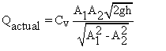

Theory
Venturimeter is the most widely used device to measure the discharge through the pipe. A venturi is a converging-Diverging nozzle of circular cross-section.
The principle of venturimeter is that when a fluid flows through the venturimeter, it accelerates in the convergent section and decelerates in the divergent section, resulting in a drop in the static pressure followed by a pressure recovery in the flow direction. By measuring the difference in the pressures at an axial station upstream of the convergent section and at the throat, the volumetric flow rate can be estimated.
The flow through the venturimeter and hence through the pipe is given by

where
Qactual = Actual discharge in m3 /s
Cv =Discharge co-efficient of a venturimeter
A1 =area at the inlet side in m2
A2 =area at the throat side in m2
h =Differential pressure head of liquid in m
g =Acceleration due to gravity (9.81 m/s2)